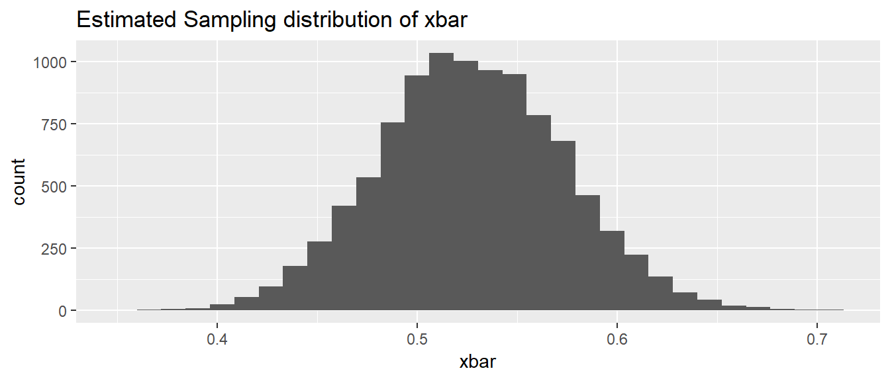
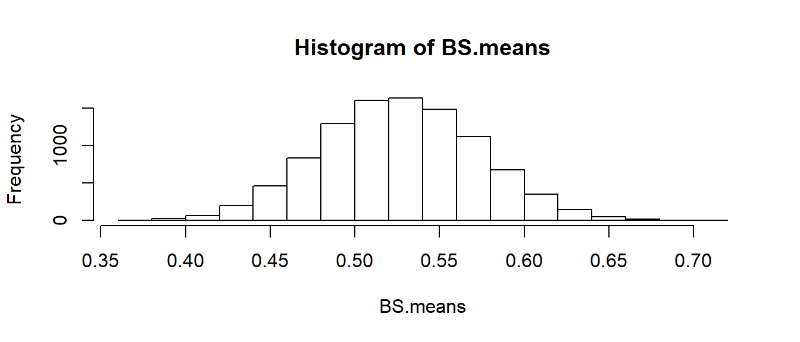

Appendix A : Alternative Bootstrap Code
Mosaic Package
library(ggplot2) # graphing functions
library(dplyr) # data summary tools
library(mosaic) # using Mosaic for iterations
# Set default behavior of ggplot2 graphs to be black/white theme
theme_set(theme_bw())This method uses the mosaic package and can work very well when everything is in data frames.
# read the Lakes data set
Lakes <- read.csv('http://www.lock5stat.com/datasets/FloridaLakes.csv')
# create the Estimated Sampling Distribution of xbar
BootDist <- mosaic::do(10000) *
mosaic::resample(Lakes) %>%
summarise(xbar = mean(AvgMercury))
# what columns does the data frame "BootDist" have?
head(BootDist)## xbar
## 1 0.5088679
## 2 0.5013208
## 3 0.5547170
## 4 0.5609434
## 5 0.4509434
## 6 0.5367925# show a histogram of the estimated sampling distribution of xbar
ggplot(BootDist, aes(x=xbar)) +
geom_histogram() +
ggtitle('Estimated Sampling distribution of xbar' )
## 2.5% 97.5%
## 0.4381132 0.6184953Base R Code
Here, no packages are used and the steps of the bootstrap are more explicit.
AvgMerc <- Lakes$AvgMercury
Boot.Its<-10000 ### Numer of iterations, like `R` in `boot`
Sample.Size<-length(AvgMerc)
BS.means<-numeric() ### where each estimate is saved
for(j in 1:Boot.Its) BS.means[j]<-mean(sample(AvgMerc, Sample.Size, replace=T))
hist(BS.means)
Then the 95% confidence interval can be found in a similar manner to above.
## 2.5% 97.5%
## 0.4382972 0.6183019